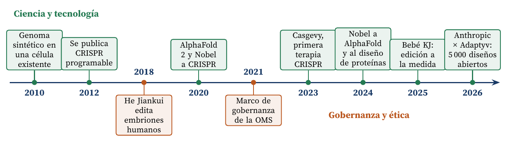

Por qué la biotecnología necesita más herramientas y estándares comunes, no prohibiciones
Carlos Luis Rojas Aragonés
Cada organismo vivo es, por sí mismo, extraordinario. En The Body, Bryson (2019) recuerda que en la escuela le enseñaron que los elementos químicos de un cuerpo humano costaban unos pocos dólares; la Royal Society of Chemistry calculó en 2013 que en realidad rondan los 151 000 dólares. Aun así, ni los científicos más brillantes del planeta podrían ensamblar con ellos una persona. Ni siquiera una célula: el genoma sintético de Gibson et al. (2010) tuvo que instalarse en una bacteria que ya existía.
Por eso creo que debemos aprovechar toda herramienta que nos ayude a entender los organismos. AlphaFold resolvió un problema de cincuenta años, predecir la forma de las proteínas, y les valió a Hassabis y Jumper el Nobel de Química 2024, compartido con David Baker por diseñar proteínas nuevas (Real Academia Sueca de Ciencias, 2024). Los concursos abiertos aceleran este avance: en el de Adaptyv sobre EGFR, 130 equipos enviaron 1 131 diseños y el ganador se unió a su objetivo ocho veces más fuerte que el anticuerpo comercial cetuximab (Cotet et al., 2025). Hoy Anthropic y Adaptyv financian la validación de más de 5 000 diseños contra cinco enfermedades y publicarán todos los resultados, incluidos los negativos (Anthropic y Adaptyv Bio, 2026).
No propongo eliminar las regulaciones, sino estandarizarlas como práctica mundial, en la línea del marco de la Organización Mundial de la Salud (2021). El caso de He Jiankui, que en 2018 editó embriones humanos (Cyranoski y Ledford, 2018), muestra el riesgo de que alguien actúe por su cuenta. Aun con ese riesgo, el balance de CRISPR, Nobel 2020 para Charpentier y Doudna (Real Academia Sueca de Ciencias, 2020), es claramente positivo:
Lo resume la Figura 1.

Figura 1. La ciencia avanza y la gobernanza la acompaña. Sobre el eje, los avances que nos ayudan a entender y corregir la vida (Gibson et al., 2010; Jinek et al., 2012; Jumper et al., 2021; U.S. Food and Drug Administration, 2023; Real Academia Sueca de Ciencias, 2024; Musunuru et al., 2025; Anthropic y Adaptyv Bio, 2026); bajo el eje, los hitos que muestran por qué hacen falta reglas comunes (Cyranoski y Ledford, 2018; Organización Mundial de la Salud, 2021).
Anthropic y Adaptyv Bio. (2026). Anthropic × Adaptyv protein design competition. Proteinbase. https://proteinbase.com/competitions/anthropic-adaptyv-2026
Bryson, B. (2019). The body: A guide for occupants. Doubleday.
Cotet, T.-S., Krawczuk, I., Pacesa, M., Nickel, L., Correia, B. E., Haas, N., et al. (2025). Crowdsourced protein design: Lessons from the Adaptyv EGFR binder competition. bioRxiv. https://doi.org/10.1101/2025.04.17.648362
Cyranoski, D. y Ledford, H. (2018). Genome-edited baby claim provokes international outcry. Nature, 563(7733), 607-608. https://doi.org/10.1038/d41586-018-07545-0
Gibson, D. G., Glass, J. I., Lartigue, C., Noskov, V. N., Chuang, R.-Y., Algire, M. A., et al. (2010). Creation of a bacterial cell controlled by a chemically synthesized genome. Science, 329(5987), 52-56. https://doi.org/10.1126/science.1190719
Jinek, M., Chylinski, K., Fonfara, I., Hauer, M., Doudna, J. A. y Charpentier, E. (2012). A programmable dual-RNA-guided DNA endonuclease in adaptive bacterial immunity. Science, 337(6096), 816-821. https://doi.org/10.1126/science.1225829
Jumper, J., Evans, R., Pritzel, A., Green, T., Figurnov, M., Ronneberger, O., et al. (2021). Highly accurate protein structure prediction with AlphaFold. Nature, 596(7873), 583-589. https://doi.org/10.1038/s41586-021-03819-2
Musunuru, K., Grandinette, S. A., Wang, X., Hudson, T. R., Briseno, K., Berry, A. M., et al. (2025). Patient-specific in vivo gene editing to treat a rare genetic disease. New England Journal of Medicine, 392(22), 2235-2243. https://doi.org/10.1056/NEJMoa2504747
Organización Mundial de la Salud. (2021). Human genome editing: A framework for governance. Organización Mundial de la Salud. https://www.who.int/publications/i/item/9789240030060
Real Academia Sueca de Ciencias. (2020). The Nobel Prize in Chemistry 2020: Press release. https://www.nobelprize.org/prizes/chemistry/2020/press-release/
Real Academia Sueca de Ciencias. (2024). The Nobel Prize in Chemistry 2024: Press release. https://www.nobelprize.org/prizes/chemistry/2024/press-release/
U.S. Food and Drug Administration. (2023, 8 de diciembre). FDA approves first gene therapies to treat patients with sickle cell disease. https://www.fda.gov/news-events/press-announcements/fda-approves-first-gene-therapies-treat-patients-sickle-cell-disease